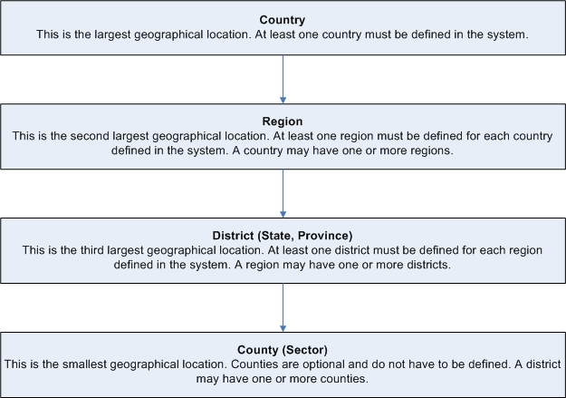

Before Installing iHRIS Qualify (4.0.4)
Return to the iHRIS Qualify User Manual index page.
Before installing iHRIS Qualify, spend some time thinking about what kinds of data you would like to collect on health workers during the training, registration and licensing process. Existing paper forms can be helpful in assembling this information. This will enable setup of the necessary data structure for entering data into the system. This section gives guidance on the data that should be collected and provides checklists for recording and organizing the data.
There are three checklists to complete to set up iHRIS Qualify:
- Data Setup Worksheet
- Define Geographical Locations
- Health Worker Data Checklist
Data Setup Worksheet
Before entering data into iHRIS Qualify, you must configure lists for selecting standard items. Standardizing these selection lists ensures that data can be reported consistently. Complete the following exercises before beginning to identify and gather all the data needed to complete the setup. This exercise should be completed by a Data Operations Manager.
Qualifications and cadres
List all of the health worker cadres to track in the system, including standard codes for each (such as ISCO classifications). Also list the minimum qualification necessary for each cadre of health workers you will be tracking, such as diploma, degree or certificate.
Action: Enter all qualifications and cadres in the system (see Add a Qualification and Add a Cadre).
Continuing education courses
List all continuing medical education courses to track for health workers who are completing in-service training requirements. Include the name of each course and the number of credit hours that can be earned by completing the course.
Action: Enter all continuing education courses in the system (see Add a Continuing Education Course).
Categories and reasons for disciplinary action
If you are tracking disciplinary actions taken on licensed health workers, list all of the broad categories for disciplinary action. For each category, list one or more specific reasons for taking the action.
Action: Enter all categories and reasons for disciplinary action in the system (see Add a Disciplinary Action Category and Add a Reason for Disciplinary Action).
Reasons for out migration
If you are tracking out migration verification requests, list all of the reasons for out migration that you want to report on.
Action: Enter all reasons for out migration in the system (see Add a Reason for Out Migration).
Categories and reasons for training disruption
If you are tracking disruptions in training, list all of the broad categories for disruption (such as medical, discipline and personal). For each category, list one or more specific reasons for disrupting training; for instance, reasons under the Medical category might include illness, death and pregnancy.
Action: Enter all categories and reasons for training disruption in the system (see Add a Training Disruption Category and Add a Reason for Training Disruption).
Academic levels and certificates
List all academic levels (such as high school, college or university) and certificates for each academic level (such as diploma, bachelor's degree, master's degree, certificate) to track for students entering health training programs.
Action: Enter all academic levels and certificates in the system (see Add an Academic Level and Add a Certificate).
Identification types
Identification types are non-changing IDs, such as a Social Security Number, driver's license, passport or national health insurance card, that are used to identify a student or health worker. List all identification types that will need to be tracked.
Action: Enter all identification types in the system (see Add an Identification Type).
Marital status types
List the types of marital status -- such as single, married, divorced and widowed -- you need to track for health workers.
Action: Enter all marital status categories in the system (see Add a Marital Status).
Facility agents
List all of the facility agents, or operators, of training institutions and health facilities to track in the system, such as Ministry of Health or government, private and nongovernmental organization.
Action: Add all facility agents to the system (see Add a Facility Agent).
Facility status
List the facility status options that you would like to track for each health facility and training institution. Typical choices are open and closed.
Action: Add the facility status options to the system (see Add a Facility Status).
Facility types and health facilities
Collect information on all health facilities and types of facilities to track in the system. Health facility types include hospitals, clinics and dispensaries. You will want to track health facilities that are associated with training institutions, where health workers or deployed and where private practice licenses are issued. For each health facility, gather as much information as possible, including the name, identification code, geographical location, contact information, facility agent and any training institutions associated with the health facility.
Action: Enter all facility types and health facilities in the system (see Add a Facility Type and Add a Health Facility).
Training institutions and programs
Collect information on all training institutions and the training programs they offer in the health cadres you will be tracking in the system. For each training institution, gather as much information as possible, including the name, identification code, geographical location, contact information, facility agent and associated health facilities. Also collect information on each training program offered, including the cadre, start date and number of students recommended to enroll in the program. You may also choose to enter inspection information for each training institution.
Action: Enter all training institutions and training programs in the system (see Add a Training Institution, Add a Pre-service Training Program and Enter Inspection Information for a Training Institution).
Define Geographical Locations
iHRIS Qualify can track health workforce data by four types of geographical locations. The system reports aggregate data at each level in order to analyze human resources at the national, regional, district and/or county level.

When data with a geographical component is entered in the system, such as an employee's home address or the location of an office or facility, you are first prompted to select a country. The system then displays a list of districts within that country for selection. (The region is automatically determined by the district that is selected.) After selecting a district, the system displays a list of counties within that district. Choosing the district is required; choosing a county is not, but is useful for tracking data by the smallest geographical subset.
Each training institution or health facility in the organization is linked to a district and, optionally, a county. Each training institution or health facility is assigned a facility agent, which defines its owner or classification, such as government, mission or private.
Locations Worksheet
Complete the following exercise for each country where employees are located. This will determine the geographical and office/facility data that need to be entered into the system. This exercise should be completed by a Data Operations Manager.
Country name:
Region names:
If you are not tracking data by region, enter one country-wide region, such as "National."
District/state/province names for each region:
County/sector names for each district/state/province (optional):
Actions: When you have completed this worksheet, enter into the system, in the following order:
-
all countries identified -- at least one must be entered (see Add a Country)
-
all regions identified for each country -- at least one region per country (see Add a Region)
-
all districts identified for each region -- at least one district per region (see Add a District)
-
all counties identified for each district -- optional (see Add a County)
Health Worker Data Checklist
When you first start to use iHRIS Qualify, you may have a backlog of health worker records to enter in the system. It is helpful to gather as much information as possible before beginning this backlog data entry. Training institution records, examination applications and results, registration applications, license applications and other documents will all be helpful to building a complete picture of the health workforce.
The first step is to decide what information about health workers you want to track. While iHRIS Qualify is designed to record a complete record of the health worker from the time s/he enters training until the time s/he leaves the workforce, not all of that information is required by the system. Plan to collect and enter only the data you need to answer your most pressing questions about the health workforce in your country.
The following checklist will help you determine which health workforce data you should track. Check off each item that you need to enter to have a complete record for each health worker.
General information
Required:
__ First name and surname
__ Nationality or citizenship
__ Country of residence
__ District, state or province of residence
Optional:
__ Other names
__ County or sector of residence
__ Home residence country, district and county (if different from current residence)
__ Date of birth
__ Gender
__ Marital status
__ Country; district, state or province; and county or sector of birth
__ Identification type and number (multiples)
__ Secondary education: school name, academic level achieved, certificate held, grade obtained and certificate number
__ Contact information (multiples): mailing address, telephone number (2), fax number, email address and notes
__ Notes about the health worker
Training information
Required:
__ Student identification or index number (this can be generated automatically by the system)
__ Training institution (if the health worker trained in-country) or country trained in (if the health worker trained outside of the country)
__ Cadre in which the health worker trained
__ Date of graduation
Optional:
__ Intake date
__ Date and reason for any training disruptions
__ Date for any resumptions in training upgrade
Notes:
A training may be received inside or outside the country.
Selecting the cadre for a training associates the health worker with the cadre in which s/he is qualified to practice. Recording a graduation date, or end date, for the training makes the health worker eligible for registration. The system will not permit the registration to be issued unless the end date is recorded.
When a new training is recorded for a health worker, a unique index, or identification, number is generated by the system for that training alone if it is not typed in. The index number is used only to identify the training program and may be issued by the training institution. Index numbers should be unique, especially within the same cadre.
When a person receives a subsequent training in a cadre other than the one s/he initially registered in, the person has received an . If the training is received in-country, the upgrade should not be in the same cadre in which the person has previously been trained. However, the person can receive upgrades for the same cadre when trained outside the country.
Examination information
All examination information is optional.
__ Date the student applied to sit for the exam
__ Application materials received and approved
__ Endorser name, qualifications and date of endorsement
__ Date of examination
__ Examination number
__ Number of attempts (up to three)
__ Results
Notes:
A person can take the examination a total of three times by default. The person should receive a passing examination result on one try to be eligible for registration, if examination results are recorded. If the person does not receive a passing result within three tries, no more examination results can be recorded for that person.
Registration information
All registration information is required.
__ Registration number (can be automatically generated by the system if not entered)
__ Application date
__ Registration date
__ Type of practice: permanent or temporary
Notes:
The registration must be issued before a license can be issued to the health worker.
The registration number is the health worker's main identification number within iHRIS Qualify. It must be unique. It can be reused for all licenses and license renewals.
The registration number is linked to the cadre in which the person is qualified to practice. If a health worker receives more than one registration in multiple cadres, a new registration number is issued for each subsequent registration.
License information
Required:
__ License number (may be the same as the registration number)
__ Start date
__ End date
Notes:
When a person applies for a license renewal, the previously issued license number is reused for the license number by default.
Continuing education, private practice licenses or disciplinary action cannot be recorded for the person until the health worker has been issued a license.
Continuing education information
All continuing education information is optional.
__ Completed continuing education courses (for license renewals)
__ Number of credit hours earned
__ Start date of course
__ End date of course
Private practice license information
All private practice license information is optional.
__ License number (may be the same as the registration or license number)
__ Start date
__ End date
__ Inspection date and results
__ Health facility name
Notes:
When a person opens a private practice clinic, s/he receives a private practice license in his or her name associate with the registration under which s/he will practice. A new license number may be entered for the private practice license. License numbers do not have to be unique.
Disciplinary actions and reinstatements
All disciplinary information is optional.
__ Category of and reason for disciplinary action
__ Date of disciplinary action
__ Notes about the disciplinary action
__ Suspension of license (yes/no)
__ Date of reinstatement, if license is suspended
Notes:
Disciplinary action can only be recorded after a registration has been issued. If a license is suspended in the system, no actions can be performed on the person's record until the license is reinstated.
Deployment information
All deployment information is optional.
__ Name of health facility
__ Date of deployment
__ Job or post title
__ Job or post code
Out migration verification request information
All out migration information is optional.
__ Country of out migration
__ Health worker's foreign address
__ Reason for out migration
__ Name of organization requesting verification
__ Date of the request
Notes
Notes are optional. This field may be used for any purpose. All notes added are dated and retained with the health worker's license in a chronological log.
Return to the iHRIS Qualify User Manual index page.
Source
Help page shipped in ihris-suite-4.3.3 (GPL-3.0, © IntraHealth International), sha256 7fcb8fa182521f29fcc149b44617f6b3012af2f53f73f23e1bf3a9556c7e6c52, at:
ihris-manage/modules/manage-help/static/help/ihris_before_installing_ihris_qualify.htmlihris-manage/modules/manage-help/static/help/ihris_before_installing_ihris_qualify_4.0.htmlihris-qualify/modules/qualify-help/static/help/ihris_before_installing_ihris_qualify.htmlihris-qualify/modules/qualify-help/static/help/ihris_before_installing_ihris_qualify_4.0.html